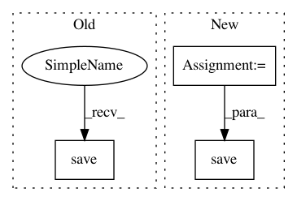

5d8814fc8db0f78db677e768e2494f59ae46e66e,run_inference.py,,main,#,44
Before Change
to_save = (rgb_flow * 255).astype(np.uint8).transpose(1,2,0)
imwrite(filename + ".png", to_save)
if args.output_value in ["raw", "both"]:
np.save(filename + "npy", flow_output.cpu().numpy())
if __name__ == "__main__":
main()
After Change
imwrite(filename + ".png", to_save)
if args.output_value in ["raw", "both"]:
// Make the flow map a HxWx2 array as in .flo files
to_save = flow_output.cpu().numpy().transpose(1,2,0)
np.save(filename + ".npy", to_save)
if __name__ == "__main__":
main()
In pattern: SUPERPATTERN
Frequency: 3
Non-data size: 3
Instances
Project Name: ClementPinard/FlowNetPytorch
Commit Name: 5d8814fc8db0f78db677e768e2494f59ae46e66e
Time: 2019-04-04
Author: clement.pinard@parrot.com
File Name: run_inference.py
Class Name:
Method Name: main
Project Name: facebookresearch/pythia
Commit Name: f22814f2405f83179c99f1fd4b895671bbdb124c
Time: 2021-02-24
Author: asg@fb.com
File Name: tools/scripts/features/lmdb_conversion.py
Class Name: LMDBConversion
Method Name: extract
Project Name: ncullen93/torchsample
Commit Name: 15ac1c2bb2627bb8fbb89b0b64709e9a50be02fd
Time: 2017-05-13
Author: ncullen.th@dartmouth.edu
File Name: torchsample/transforms/tensor_transforms.py
Class Name: ToFile
Method Name: __call__